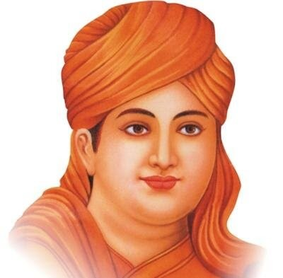

Sant Tukaram Pradnyavardhini
Formerly Sant Tukaram Salvation Mission, Malad
Formerly Sant Tukaram Salvation Mission, Malad
Established on 20th April 1950, Sant Tukaram Pradnyavardhini is a Public Charitable Trust dedicated to education, cultural preservation, and spiritual growth.
Learn About Our Founder
1608 – 1645 | Spiritual Saint & Poet
Sant Tukaram (1608–1645) is a revered and iconic figure in the spiritual history of India. His life and teachings have left a deep impact on the cultural and religious landscape of Maharashtra and beyond. He was born in Dehu near Pune as Tukaram Bolhoba Aambile.
He is regarded as the first modern poet of Marathi literature. His fearless stand against caste discrimination and meaningless rituals, along with his deep devotion to Lord Vitthal, made him unique among the saints of his time.
संत तुकाराम यांचा जन्म १६०८ - १६४५ मध्ये महाराष्ट्रातील पुण्याजवळील देहू गावात झाला. तुकाराम विठोबा आंबिले असे त्यांचे खरे नाव आहे.
संत तुकारामांचे सामाजिक कार्य सर्वसामान्य लोकांची वैचारिकता बदलून नैतिक अधोगती थांबविणे हे होते.
आपल्या जीवनातून आणि अभंगांतून शुद्ध परमार्थधर्माच्या स्थापनेचे कार्य त्यांनी चालू ठेवले.
1824 | Social Reformer & Philosopher
Dayanand Saraswati was born in 1824 at Tankara, Gujarat. His original name was Mool Shankar Tiwari. He studied Vedic scriptures, Upanishads, and other sacred texts in depth.
He was a great social reformer who strongly opposed regressive practices in Hindu society such as untouchability and denial of education to women. He also rejected idol worship.
To eliminate superstition, blind faith, and rituals, he founded the Arya Samaj, which played a significant role in social and religious reform in India.
महर्षी दयानंद सरस्वती ह्यांचा जन्म १८२४ ला गुजरात मधील टंकारा येथे झाला. त्यांनी वेद व उपनिषदांचा सखोल अभ्यास केला.
धर्मातील अंधविश्वास आणि अवडंबर यांचा त्यांनी कडाडून विरोध केला. नंतर त्यांनी आर्य समाज या संस्थेची स्थापना केली.


Founder of Sant Tukaram Pradnyavardhini
5 August 1917
9 May 1980
Initiator & Chief Founder
Led 7 other trustees
Shri B. R. Gokhale was the visionary initiator who took the lead in establishing Sant Tukaram Pradnyavardhini (erstwhile Sant Tukaram Salvation Mission, Malad) along with 7 other trustees. His leadership was instrumental in promoting Universal Brotherhood through propagation of Vedic Principles and setting the foundation for the trust's constitution adopted on 13th December 1953.
Under his guidance, the trust was registered at Thane [E-81 dated 1.1.1954] and subsequently at Mumbai [E4137 dated 19.12.1973], establishing a lasting legacy of education, cultural preservation, and spiritual growth that continues to thrive today.


Inculcate Character and National Integrity through Education.
संस्थेचे ध्येय-विधान: शिक्षणाच्या माध्यमातून चारित्र्य व राष्ट्राभिमान रुजवणे
We work through educational institutions, research centers, publications, seminars, and community activities to achieve our objectives of promoting harmony, education, and cultural understanding.
Universal Brotherhood (Vasudhaiv Kutumbakam) through Education.
संस्थेचे दृष्टी-विधान: शिक्षणाद्वारे विश्वबंधुत्व (वसुधैव कुटुंबकम)
To propagate universal brotherhood through education, establishing Pre-primary to Higher secondary Schools, Residential schools, Hostels, Colleges and Institutions for Arts, Science, Commerce, Medical, Technological, Technical, Architecture, Skill development, Sanskrit and Vedic Pathshalas.
Establish Libraries, Gymnasiums, Yoga and Health Centers to promote physical and mental well-being alongside intellectual growth.
Establish Research Centers for the Studies in Indian Literature, Culture, Arts and History to preserve and promote India's rich heritage.
Organize Lectures, Workshops, Seminars, Forums, Publications, Exhibitions for propagation of its Objectives and sharing knowledge.
Propagate teachings of Maharshi Dayanand Saraswati and Sant Tukaram to promote spiritual growth and ethical living.
Promote universal brotherhood and friendship among all communities through shared values and collaborative initiatives.
stsmission@gmail.com
Gajanan Niwas, Off Liberty Garden Road No. 1, Opposite Trimurti Tower, Malad West, Mumbai – 400064